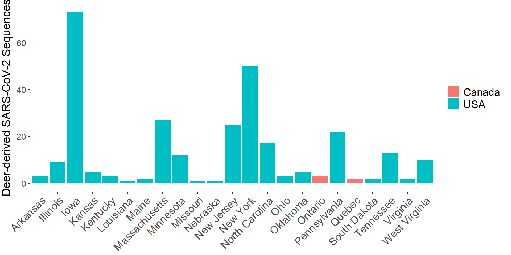
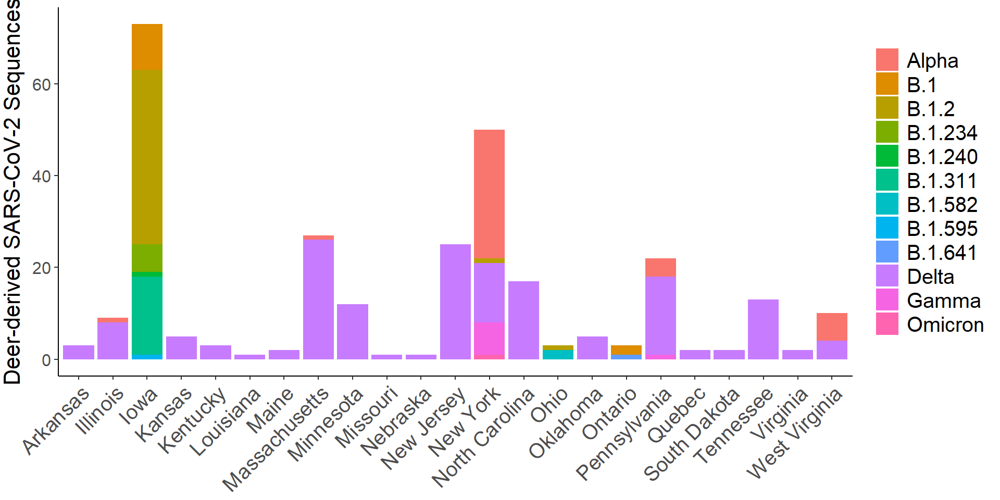
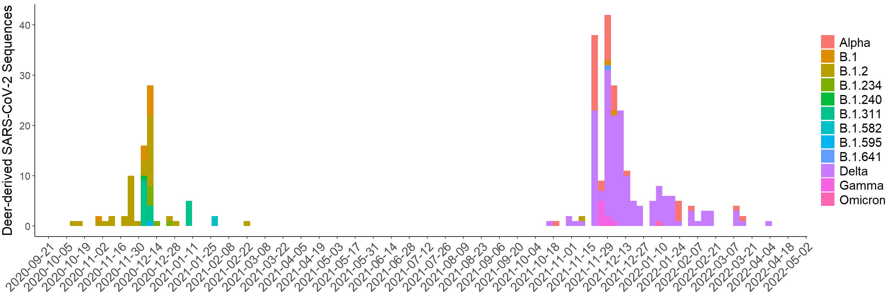

Code
library(tidyverse)
library(dplyr)
library(readr)
library(tidyr)
library(stringr)
library(ggplot2)Vera Flück
April 24, 2024
deer_sars2 <- read_delim("C:/Users/vf22a541/OneDrive - Universitaet Bern/SARS-CoV-2_deer/VF_analysis/deer_sars_cov2/data_gisaid/gisaid_hcov-19_2024_04_16_14.tsv",
delim = "\t", escape_double = FALSE,
trim_ws = TRUE)
deer_sars2 <- separate_wider_delim(deer_sars2, cols = Location, delim = "/ ", names = c("region", "country", "state","county"), too_few = "debug")
deer_sars2["state"][deer_sars2["state"] == "New York "] <- "New York" #Two entries of new york with additional space
deer_sars2 <- deer_sars2[,-8:-11] #get rid of columns
deer_sars2 <- deer_sars2 %>% relocate(`Collection date`, .before = `Accession ID`)
deer_sars2$`Virus name` <- paste0(deer_sars2$`Virus name`, "|", deer_sars2$`Accession ID`)
deer_sars2$`Virus name` <- paste0(deer_sars2$`Virus name`, "|", deer_sars2$`Collection date`)
#add VOC
deer_sars2 <- deer_sars2 %>% mutate(VOC = case_when(Lineage == 'B.1' ~ "B.1",
Lineage == 'B.1.2' ~ "B.1.2",
Lineage == "B.1.234" ~ "B.1.234",
Lineage == 'B.1.617.2' ~ "Delta",
Lineage == "B.1.240" ~ "B.1.240",
Lineage == "B.1.641" ~ "B.1.641",
Lineage == "B.1.582" ~ "B.1.582",
Lineage == "B.1.595" ~ "B.1.595",
Lineage == "B.1.240" ~ "B.1.240",
grepl("AY", Lineage) ~ "Delta",
Lineage == "BA.1"~ "Omicron",
Lineage == "BA.1.1"~ "Omicron",
Lineage == "B.1.1.529"~ "Omicron",
Lineage == "BA.2"~ "Omicron",
Lineage == "XBB"~ "Omicron",
Lineage == "XBB.1"~ "Omicron",
Lineage == "XBB.1.5"~ "Omicron",
Lineage == "XBB.1.16" ~ "Omicron",
Lineage == 'B.1.526'~ "Iota",
Lineage == 'B.1.526.1'~ "Iota",
Lineage == 'B.1.526.2'~ "Iota",
Lineage == 'B.1.526.3' ~ "Iota",
Lineage == 'B.1.351'~ "Beta",
Lineage == 'B.1.351.1'~ "Beta",
Lineage == 'B.1.351.2'~ "Beta",
Lineage == 'B.1.351.3'~ "Beta",
Lineage == 'B.1.351.4'~ "Beta",
Lineage == 'B.1.351.5' ~ "Beta",
Lineage == 'P.1'~ "Gamma",
Lineage == 'P.1.1'~ "Gamma",
Lineage == 'P.1.2'~ "Gamma",
Lineage == 'P.1.3'~ "Gamma",
Lineage == 'P.1.4'~ "Gamma",
Lineage == 'P.1.5'~ "Gamma",
Lineage == 'P.1.6'~ "Gamma",
Lineage == 'P.1.7'~ "Gamma",
Lineage == 'P.1.7.1'~ "Gamma",
Lineage == 'P.1.8'~ "Gamma",
Lineage == 'P.1.9'~ "Gamma",
Lineage == 'P.1.10'~ "Gamma",
Lineage == 'P.1.10.1'~ "Gamma",
Lineage == 'P.1.10.2'~ "Gamma",
Lineage == 'P.1.11'~ "Gamma",
Lineage == 'P.1.12'~ "Gamma",
Lineage == 'P.1.12.1'~ "Gamma",
Lineage == 'P.1.13'~ "Gamma",
Lineage == 'P.1.14'~ "Gamma",
Lineage == 'P.1.15'~ "Gamma",
Lineage == 'P.1.16'~ "Gamma",
Lineage == 'P.1.17'~ "Gamma",
Lineage == 'P.1.17.1' ~ "Gamma",
Lineage == 'B.1.525' ~ "Eta",
Lineage == 'B.1.1.7'~ "Alpha",
Lineage == 'Q.1'~ "Alpha",
Lineage == 'Q.2'~ "Alpha",
Lineage == 'Q.3'~ "Alpha",
Lineage == 'Q.4'~ "Alpha",
Lineage == 'Q.5'~ "Alpha",
Lineage == 'Q.6'~ "Alpha",
Lineage == 'Q.7'~ "Alpha",
Lineage == 'Q.8' ~ "Alpha",
Lineage == 'B.1.429'~ "Epsilon",
Lineage == 'B.1.429.1'~ "Epsilon",
Lineage == 'B.1.427' ~ "Epsilon",
Lineage == 'B.1.621'~"Mu",
Lineage == 'B.1.621.1'~"Mu",
Lineage == 'B.1.621.2'~"Mu",
Lineage == 'BB.1'~"Mu",
Lineage == 'BB.2' ~ "Mu",
Lineage == 'C.37'~ "Lambda",
Lineage == 'C.37.1' ~ "Lambda",
Lineage == "B.1.311" ~ "B.1.311"))deer_sars2 %>%
ggplot(aes(x=state, fill=country)) +
geom_bar() +
ylab("Deer-derived SARS-CoV-2 Sequences")+
theme_classic()+
theme(axis.text.x = element_text(angle=45, hjust=1, size=15),
axis.text.y = element_text(size = 12),
axis.title.x = element_blank(),
axis.title.y = element_text(vjust = 2, size = 16),
legend.text = element_text(size = 15),
legend.title = element_blank()) 
deer_sars2 %>%
ggplot(aes(x=state, fill=VOC)) +
geom_bar() +
ylab("Deer-derived SARS-CoV-2 Sequences")+
theme_classic()+
theme(axis.text.x = element_text(angle=45, hjust=1, size=15),
axis.text.y = element_text(size = 12),
axis.title.x = element_blank(),
axis.title.y = element_text(vjust = 2, size = 16),
legend.text = element_text(size = 15),
legend.title = element_blank())
deer_sars2 %>%
ggplot(aes(x=`Collection date`,fill=VOC))+
geom_histogram(binwidth = 5)+
scale_x_date(date_breaks = "2 weeks")+
ylab("Deer-derived SARS-CoV-2 Sequences")+
theme_classic()+
theme(axis.text.x = element_text(angle=45, hjust=1, size=15),
axis.text.y = element_text(size = 12),
axis.title.x = element_blank(),
axis.title.y = element_text(vjust = 2, size = 16),
legend.text = element_text(size = 15),
legend.title = element_blank())